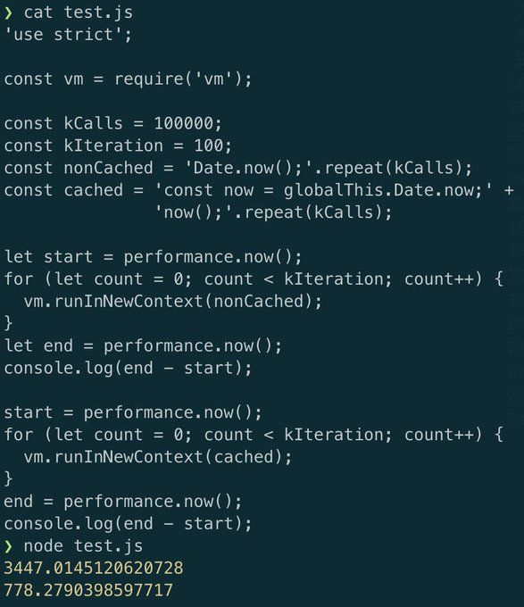
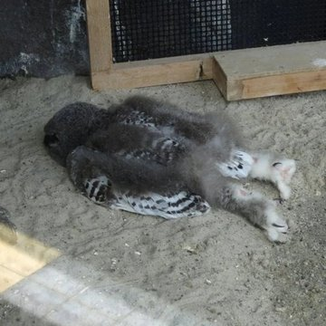

Emily Zugay
0 TweetsEmily Zugay
@Emily_Zugay10
Joined October 2021
920Following
112Followers
Emily Zugay
@Emily_Zugay10 October 2021A new version (v18.8.0) of @nodejs is out! - Adds experimental runtime user-land snapshots - npm@8.18.0 including the new `npm query` cmd - and much more from our awesome collaborators! ⬇️ Get it now: $ nvm install 18.8.0
Emily Zugay
@Emily_Zugay10 October 2021A new version (v18.8.0) of @nodejs is out! - Adds experimental runtime user-land snapshots - npm@8.18.0 including the new `npm query` cmd - and much more from our awesome collaborators! ⬇️ Get it now: $ nvm install 18.8.0
Joey Arhar
A new version (v18.8.0) of I just discovered that baby owls sleep on their stomachs cause their heads are too heavy and I can’t stop laughing
You might like